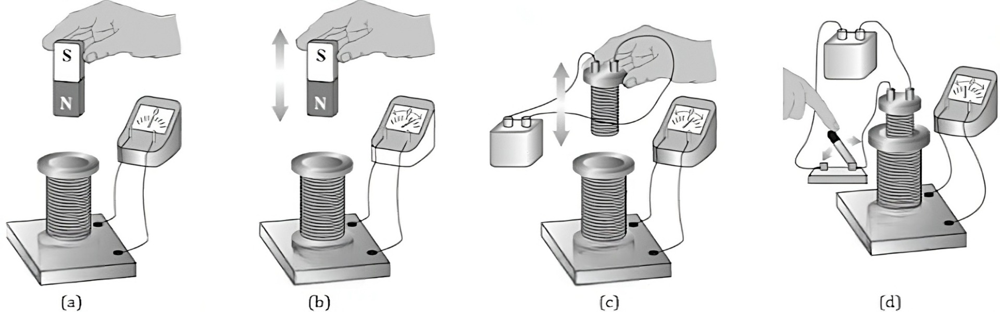
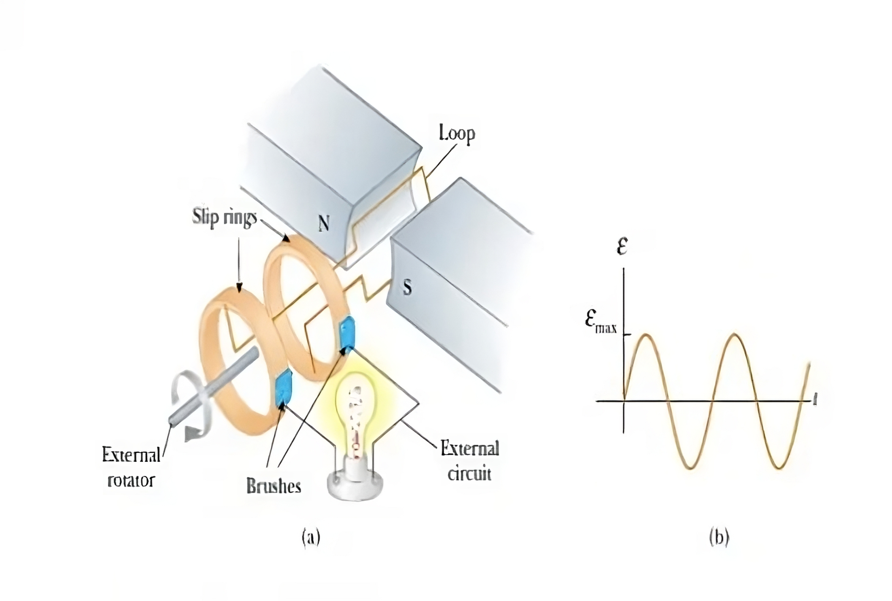
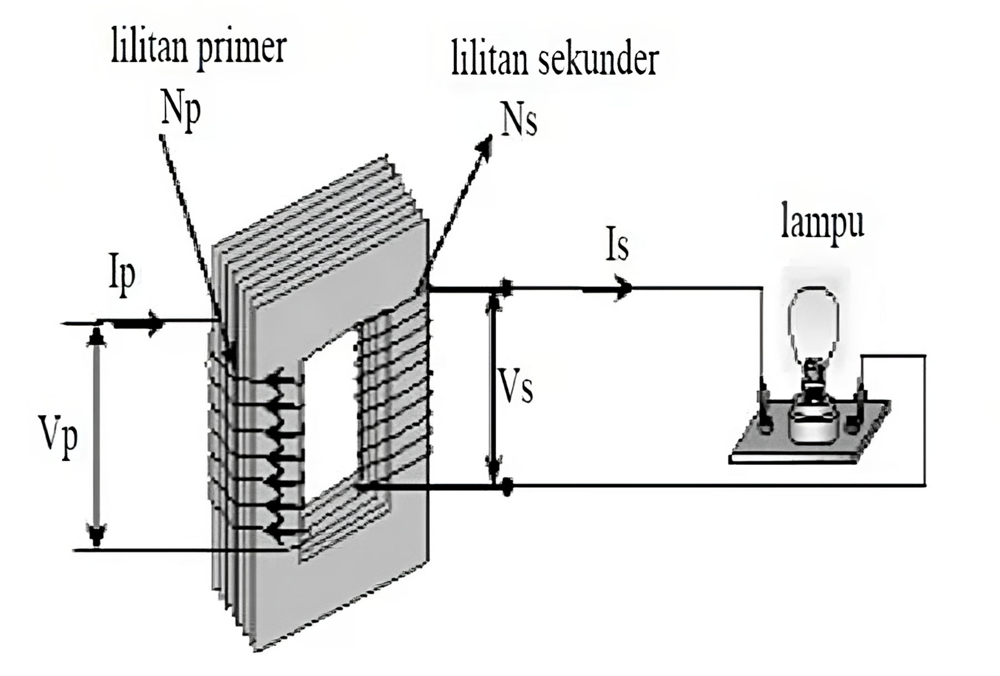
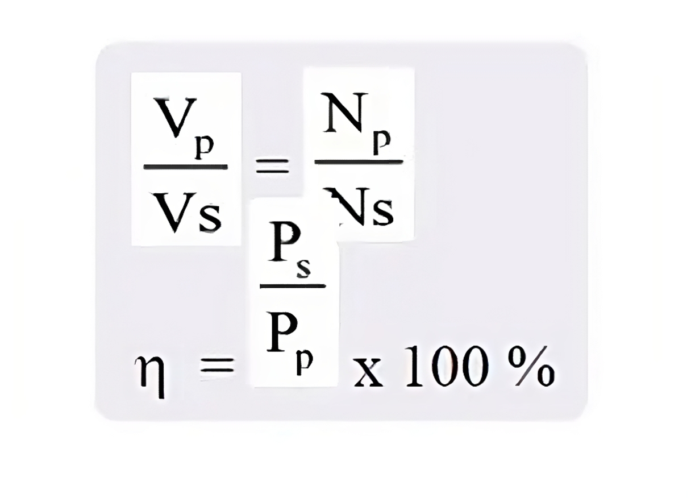
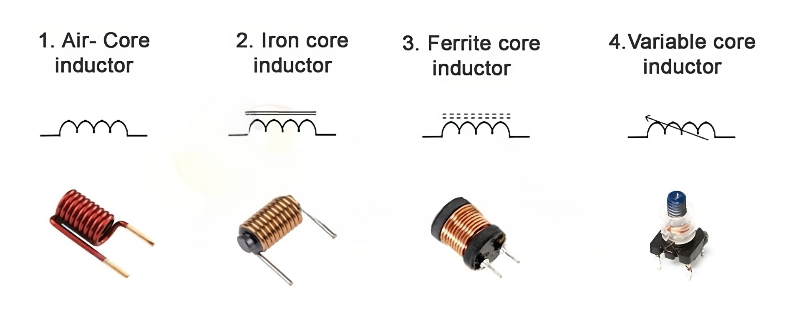
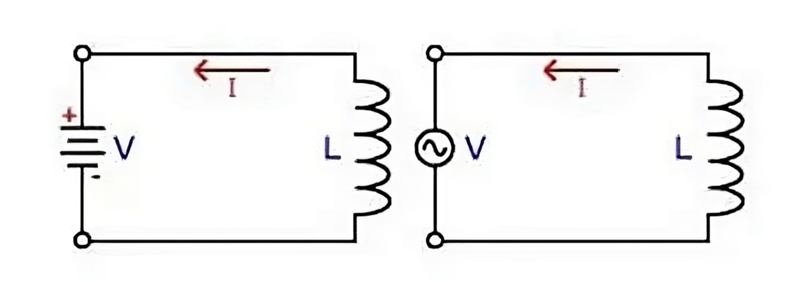
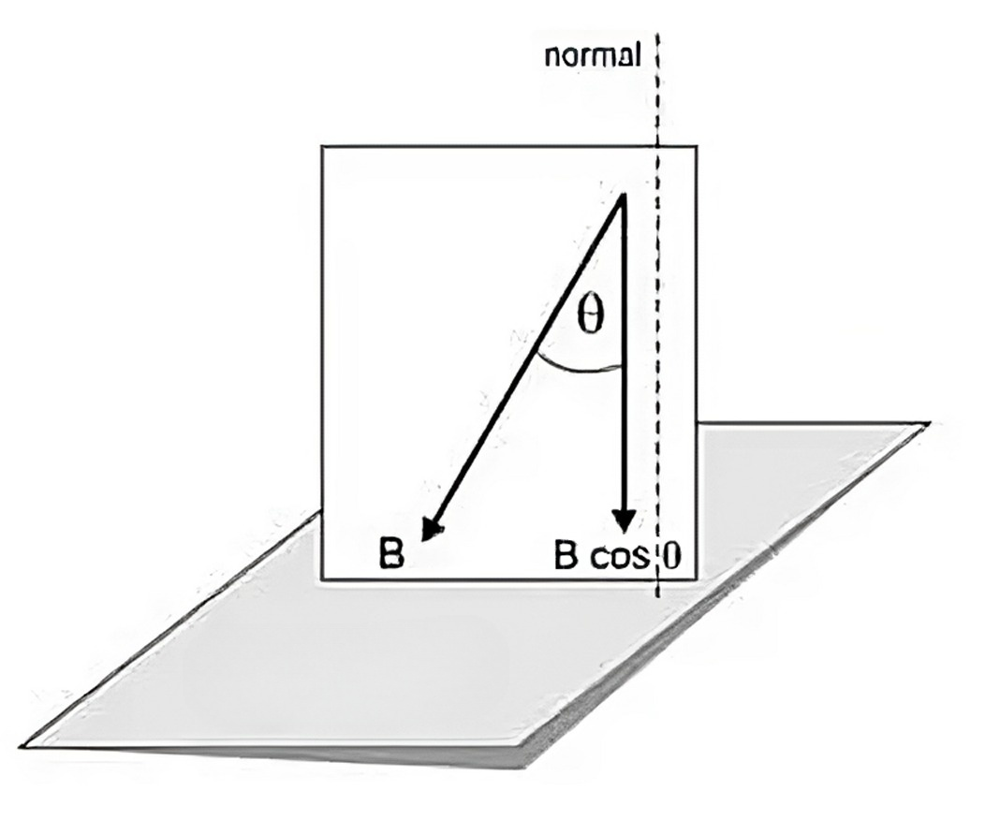

Induksi Magnetik
Pengertian Induksi Magnetik
Induksi Elektromagnetik adalah kejadian terjadinya arus listrik karena adanya perubahan fluks magnetik. Fluks magnetik merujuk pada jumlah garis gaya magnet yang melewati suatu bidang. Seorang ilmuwan asal Jerman yang bernama Michael Faraday mengemukakan bahwa medan magnet dapat menghasilkan arus listrik. Pada tahun 1821, Michael Faraday membuktikan bahwa perubahan medan magnet dapat menginduksi arus listrik.
Galvanometer adalah sebuah perangkat yang dapat digunakan untuk mendeteksi keberadaan aliran arus listrik. Gaya gerak listrik yang terjadi akibat perubahan jumlah garis gaya magnet disebut sebagai GGL induksi, sedangkan arus yang mengalir disebut arus induksi, dan prosesnya disebut sebagai induksi elektromagnetik.
Beberapa faktor yang mempengaruhi besar GGL induksi adalah sebagai berikut:
(1) Kecepatan perubahan medan magnet, semakin cepat perubahan medan magnet, semakin besar GGL induksi yang terjadi.
(2) Jumlah lilitan, semakin banyak lilitan, semakin besar GGL induksi yang terjadi.
(3) Kekuatan magnet, semakin kuat keadaan magnet, semakin besar GGL induksi yang terjadi.
 Gambar 1. Induksi Magnetik
Gambar 1. Induksi Magnetik
Proses Terjadinya Induksi Magnetik
Induksi elektromagnetik adalah kejadian di mana terjadi aliran listrik yang disebabkan oleh perubahan fluks magnetik dalam suatu kumparan atau konduktor, atau ketika konduktor tersebut bergerak melintasi medan magnetik.
 Gambar 2. Ilustrasi Percobaan FaradayKetika kutub utara magnet bergerak ke arah dalam kumparan, jarum galvanometer akan mengalami simpangan ke arah tertentu (misalnya ke kanan). Namun, jarum galvanometer segera kembali ke posisi netral (tidak terjadi simpangan) saat magnet tersebut tetap diam di dalam kumparan untuk sementara waktu. Ketika magnet batang ditarik keluar, jarum galvanometer akan mengalami simpangan ke arah yang berlawanan (misalnya ke kiri). Simpangan jarum galvanometer terjadi karena adanya aliran arus dalam kumparan. Arus listrik ini muncul karena terjadi perbedaan potensial di kedua ujung kumparan saat magnet batang bergerak masuk atau keluar dari kumparan. Perbedaan potensial yang terjadi ini dikenal sebagai Gaya Gerak Listrik Induksi (ggl induksi).
Ketika magnet batang digerakkan masuk ke dalam kumparan, terjadi peningkatan jumlah garis gaya magnetik yang memotong kumparan (yang menyebabkan simpangan pada galvanometer atau adanya aliran arus). Ketika batang magnet diam sejenak, jarum galvanometer kembali ke posisi awal (tanpa adanya aliran arus). Saat batang magnet dikeluarkan, terjadi pengurangan jumlah garis gaya magnetik yang memotong kumparan (yang mengakibatkan simpangan galvanometer ke arah yang berlawanan). Oleh karena itu, karena terjadinya perubahan jumlah garis gaya magnetik yang memotong kumparan, terdapat perbedaan potensial atau gaya gerak listrik induksi (ggl induksi) di kedua ujung kumparan. Arus listrik yang disebabkan oleh perubahan jumlah garis gaya magnetik yang memotong kumparan disebut arus induksi.
Terdapat tiga faktor yang mempengaruhi besarnya gaya gerak listrik induksi (ggl induksi), yaitu:
(1) Jumlah lilitan pada kumparan: Besar ggl induksi bergantung pada jumlah lilitan yang terdapat pada kumparan. Semakin banyak lilitan, semakin besar ggl induksi yang dihasilkan.
(2) Kecepatan gerakan magnet masuk dan keluar dari kumparan: Besar ggl induksi juga dipengaruhi oleh kecepatan gerakan magnet saat masuk dan keluar dari kumparan. Semakin cepat gerakan magnet, semakin besar ggl induksi yang terjadi.
(3) Kuat magnet pada batang: Besar ggl induksi juga tergantung pada kuat magnet yang digunakan pada batang magnet. Semakin kuat magnet, semakin besar ggl induksi yang akan dihasilkan.
Penerapan Induksi Elektromagnetik ( Penerapan GGL Induksi dalam kehidupan sehari-hari )
Pada proses induksi elektromagnetik, terjadi transformasi energi kinetik menjadi energi listrik. Induksi elektromagnetik digunakan dalam pembangkit energi listrik, seperti generator dan dinamo.
Generator dan dinamo memiliki komponen utama berupa kumparan dan magnet. Ketika kumparan atau magnet berputar, terjadi perubahan jumlah garis gaya magnetik dalam kumparan. Perubahan ini menghasilkan gaya gerak listrik induksi (GGL induksi) pada kumparan.
Energi mekanik yang diberikan kepada generator dan dinamo diubah menjadi energi gerak rotasi. Hal ini menyebabkan GGL induksi terus-menerus terjadi dengan pola yang berulang secara periodik.
Generator Listrik
Generator adalah alat untuk mengubah energi mekanik menjadi energi listrik. Generator ada dua jenis yaitu generator arus searah (DC) atau dynamo dan generator arus bolak-balik (AC) atau alternator. Generator bekerja berdasarkan prinsip induksi elektromagnetik yaitu dengan memutar suatu kumparan dalam medan magnet sehingga timbul GGL induksi.
 Gambar 3. Generator ACJika kumparan dengan N buah lilitan diputar dengan kecepatan sudut w, maka GGL induksi yang dihasilkan oleh generator adalah :
ε = B.A.ω.N.sinθ
GGL induksi akan maksimum jika θ = 90o atau sin θ = 1 , sehingga :
ε max = B.A.ω.N , sehingga persamaan di atas dapat ditulis menjadi:
ε = ε max sin θ
ε = GGL induksi (Volt); εmax= GGL induksi maksimum (volt)
N = jumlah lilitan kumparan; B = induksi magnet (T); A=luas bidang kumparan (m2)
ω = kecepatan sudut kumparan (rad/s); t = waktu (s); θ = ω.t = sudut (o)
Transformator
Trafo adalah sebuah perangkat yang digunakan untuk mengubah tegangan AC dengan cara memanfaatkan prinsip induksi elektromagnetik. Prinsip ini melibatkan transfer energi listrik melalui kumparan primer ke kumparan skunder, dengan kemampuan untuk memperbesar atau memperkecil tegangan tersebut. Ketika arus listrik bolak-balik mengalir melalui kumparan primer dan diinduksikan oleh bahan ferromagnetik seperti besi lunak, tercipta medan magnet yang berubah-ubah. Hal ini menghasilkan GGL (gaya gerak listrik) pada kumparan skunder.
Gambar 4. Transformator step downTerdapat dua tipe trafo yang umum digunakan, yaitu trafo step-up dan trafo step-down. Trafo step-up dirancang untuk meningkatkan tegangan AC dari sumbernya, dengan jumlah lilitan pada kumparan skunder yang lebih banyak dibandingkan dengan kumparan primer. Sementara itu, trafo step-down berperan dalam menurunkan tegangan AC dari sumbernya, dengan jumlah lilitan pada kumparan skunder yang lebih sedikit dibandingkan dengan kumparan primer.

Np = tegangan primer; Ns = tegangan skunder
Pp = daya primer (Watt); Ps = daya skunder (Watt)
Ip = kuat arus primer (A); Is = kuat arus skunder (A)
Macam-Macam Transformator
Apabila tegangan terminal output lebih besar daripada tegangan yang diubah, trafo yang digunakan berfungsi sebagai penaik tegangan. Sebaliknya apabila tegangan terminal output lebih kecil daripada tegangan yang diubah, trafo yang digunakan berfungsi sebagai penurun tegangan. Dengan demikian, transformator (trafo) dibedakan menjadi dua, yaitu trafo step up dan trafo step down.
Trafo step up adalah transformator yang berfungsi untuk menaikkan tegangan AC. Trafo ini memiliki ciri-ciri:
1. jumlah lilitan primer lebih sedikit daripada jumlah lilitan sekunder,
2. tegangan primer lebih kecil daripada tegangan sekunder,
3. kuat arus primer lebih besar daripada kuat arus sekunder.
Trafo step down adalah transformator yang berfungsi untuk menurunkan tegangan AC. Trafo ini memiliki ciri-ciri:
1. jumlah lilitan primer lebih banyak daripada jumlah lilitan sekunder,
2. tegangan primer lebih besar daripada tegangan sekunder,
3. kuat arus primer lebih kecil daripada kuat arus sekunder.
I. Transformator Ideal
Besar tegangan dan kuat arus pada trafo bergantung banyaknya lilitan. Besar tegangan sebanding dengan jumlah lilitan. Makin banyak jumlah lilitan tegangan yang dihasilkan makin besar. Hal ini berlaku untuk lilitan primer dan sekunder. Hubungan antara jumlah lilitan primer dan sekunder dengan tegangan primer dan tegangan sekunder dirumuskan rms12. Trafo dikatakan ideal jika tidak ada energi yang hilang menjadi kalor, yaitu ketika jumlah energi yang masuk pada kumparan primer sama dengan jumlah energi yang keluar pada kumparan sekunder. Hubungan antara tegangan dengan kuat arus pada kumparan primer dan sekunder dirumuskan rms2Jika kedua ruas dibagi dengan t, diperoleh rumus rms3Dalam hal ini faktor (V × I) adalah daya (P) transformator.
Berdasarkan rumus-rumus di atas, hubungan antara jumlah lilitan primer dan sekunder dengan kuat arus primer dan sekunder dapat dirumuskan sebagai rms4 Dengan demikian untuk transformator ideal akan berlaku persamaan berikut.
rms5 Dengan:
Vp = tegangan primer (tegangan input = Vi ) dengan satuan volt (V)
Vs = tegangan sekunder (tegangan output = Vo) dengan satuan volt (V)
Np = jumlah lilitan primer
Ns = jumlah lilitan sekunder
Ip = kuat arus primer (kuat arus input = Ii) dengan satuan ampere (A)
Is = kuat arus sekunder (kuat arus output = Io) dengan satuan ampere (A)
II. Efisiensi Transformator
Di bagian sebelumnya kamu sudah mempelajari transformator atau trafo yang ideal. Namun, pada kenyataannya trafo tidak pernah ideal. Jika trafo digunakan, selalu timbul energi kalor. Dengan demikian, energi listrik yang masuk pada kumparan primer selalu lebih besar daripada energi yang keluar pada kumparan sekunder. Akibatnya, daya primer lebih besar daripada daya sekunder. Berkurangnya daya dan energi listrik pada sebuah trafo ditentukan oleh besarnya efisiensi trafo. Perbandingan antara daya sekunder dengan daya primer atau hasil bagi antara energi sekunder dengan energi primer yang dinyatakan dengan persen disebut efisiensi trafo. Efisiensi trafo dinyatakan dengan η.
Induktor
Dalam bidang elektronika, induktor merupakan salah satu komponen yang beroperasi berdasarkan prinsip induksi magnetik. Induktor juga sering disebut dengan sebutan spul, yang terbuat dari kawat beremail tipis. Induktor umumnya terbuat dari tembaga dan memiliki simbol L dengan satuan pengukuran Henry (H). Fungsi utama dari induktor adalah untuk menciptakan medan magnet. Induktor biasanya berbentuk kawat yang dililitkan sehingga membentuk kumparan. Kemampuan induktor untuk menciptakan medan magnet ini disebut sebagai konduktansi.
Satuan pengukuran induktansi adalah henry (H) atau milihenry (mH). Untuk meningkatkan induktansi, seringkali bahan inti disisipkan di dalam kumparan. Induktor yang memiliki inti dari bahan besi disebut sebagai elektromagnet. Induktor memiliki sifat untuk menahan arus bolak-balik (AC) dan bersifat konduktif terhadap arus searah (DC).
Macam-Macam Induktor
Macam-macam induktor menurut bahan pembuat intinya dapat dibagi 4 yaitu :
Simbol Induktor

Kegunaan Induktor dalam sistem elektronik
Induktor dalam rangkaian listrik atau elektronika dapat diaplikasikan kedalam rangkaian:

Induktor berfungsi sebagai :
1. tempat terjadinya gaya magnet.
2. pelipat tegangan.
3. pembangkit getaran.
Berdasarkan kegunaannya Induktor bekerja pada :
1. frekuensi tinggi pada spul antena dan osilator.
2. frekuensi menengah pada spul MF.
3. frekuensi rendah pada trafo input, trafo output, spul speaker, trafo tenaga, spul relay dan spul penyaring.
Terjadinya Medan Magnet Induktansi Searah
Bila kita mengalirkan arus listrik melalui kabel, terjadilah garis-garis gaya magnet. Bila kita mengalirkan arus melalui spul atau coil (kumparan) yang dibuat dari kabel yang digulung, akan terjadi garis-garis gaya dalam arah sama yang membangkitkan medan magnet. Kekuatan medan magnet sama dengan jumlah garis-garis gaya magnet, dan berbanding lurus dengan hasil kali dari jumlah gulungan dalam kumparan dan arus listrik yang melalui kumparan tersebut.
 Induktor terhubung sumber tegangan DC
Induktor terhubung sumber tegangan DC Induktansi Bolak-balik
Bila dua kumparan ditempatkan berdekatan satu sama lain dan salah satu kumparan (L1) diberi arus listrik AC, pada L1 akan terjadi fluks magnet. Fluk magnet ini akan melalui kumparan kedua (L2) dan akan membangkitkan emf (elektro motorive force) pada kumparan L2. Efek seperti ini disebut induksi timbal balik (mutual induction). Hal seperti ini biasanya kita jumpai pada transformator daya.
 Induktor terhubung sumber tegangan AC
Induktor terhubung sumber tegangan AC Perlawanan yang diberikan kumparan tersebut dinamakan reaktansi induktif. Reaktansi Induktif ini diberi simbol XL dalam satuan Ohm.
XL = 2πfL
KETERANGAN :
π = 3.14
F = frekwensi arus bolak-balik ( Hz)
L = Induktansi ( Henry )
∞ = kecepatan sudut ( 2πfL)
XL = reaktansi induktif ( Ω )
Pengisian Induktor
Bila kita mengalirkan arus listrik I, maka terjadilah garis-garis gaya magnet. Bila kita mengalirkan arus melalui spul atau coil (kumparan) yang dibuat dari kabel yang digulung,a akan terjadi garis-garis gaya dalam arah sama membangkitkan medan magnet. Kekuatan medan magnet sama dengan jumlah garis-garis gaya magnet dan berbanding lurus dengan hasil kali dari jumlah gulungan dalam kumparan dan arus listrik yang melalui kumparan tersebut.
Contoh rangkaian :
 Rangkaian Pengisian Induktasi dengan tegangan DC
Rangkaian Pengisian Induktasi dengan tegangan DC
Bila arus bolak–balik mengalir pada induktor, maka akan timbul gaya gerak listrik (ggl) induksi Hal ini berarti antara arus dan tegangan berbeda fase sebesar Л / 2 = 900 dan arus tertinggal (lag) dari tegangan sebesar 900. 2Лf merupakan perlawanan terhadap aliran arus.
 Rangkaian Pengisian Induktasi dengan tegangan AC
Rangkaian Pengisian Induktasi dengan tegangan AC
Pengosongan Induktor
Bila arus listrik l sudah memenuhi lilitan , maka terjadilah arus akan bergerak berlawanan arah dengan proses pengisian sehingga pembangkitan medan magnet dengan garis gaya magnet yang sama akan menjalankan fungsi dari lilitan tersebut makin tinggi nilai L ( induktansi) yang dihasilkan maka makin lama proses pengosongannya.
Rangkaian Pengosongan Induktasi
Menghitung Impedansi Induktor
Setelah diperoleh nilai XL maka Impedansi dapat di hitung :
Z disebut impedansi Seri dengan satuan Ω (ohm).
Rumus Induksi Elektromagnetik
1. Fluks Magnetik
Fluks magnet diartikan sebagai perkalian antara medan magnet B (baca: medan magnet) dengan luas bidang A yang letakknya tegak lurus dengan induksi magnetnya. Secara matematis rumus fluks adalah
Φ = BA

Faktanya, induksi magnet B tidak selalu tegak lurus pada bidang, bisa membentuk sudut tertentu. Misalkan ada sebuah induksi medan magnet yang membentuk sudut teta dengan garis normal maka besarnya fluks magnet yang dihasilkan adalah
>Φ = BA cos θ
Φ = Fluks magnet
B = induksi magnet
A = luas bidang
θ = sudut antara arah induksi magnet B dengan arah garis normal bidang
Hukum Faraday
Hasil percobaan yang dilakukan faraday menghasilkan sebuah hukum yang berbunyi :
=> Bila jumlah fluks magnet yang memasuki suatu kumparan berubah, maka pada ujung-ujung kumparan timbul gaya gerak listrik induksi (ggl induksi)
=>Besarnya gaya gerak listrik induksi bergantung pada laju perubahan fluks dan banyaknya lilitan.
Secara matematis ggl yang dihasilkan dapat ditentukan dengan menggunakan rumus
ε = -N (ΔΦ/Δt)
(tanda negatif menunjukkan arah induksi)
DENGAN :
ε = ggl induksi (volt)
N = jumlah lilitan
ΔΦ/Δt = laju perubahan fluks magnet
dari rumus di atas, untuk menimbulkan perubahan fluks magnet agar menghasilkan ggl induksi dapat dilakukan dengan beberapa cara,
antara lain:
=> memperbesar perubahan induksi magnet B
=> memperkecil luas bindang A yang ditembus oleh medan magnet.
=> memperkecil sudut
2. Hukum Lenz
Hukum Lenz berbunyi “arus induksi akan muncul di dalam arah yang sedemikian rupa sehingga arah induksi menentang perubahan yang dihasilkan. Dengan kata lain, arah arus induksi yang terjadi dalam suatu penghantar menimbulkan medan magnet yang menentang penyebab perubahan medan magnet tersebut”. Perhatikan gambar di bawah ini

Berdasarkan gambar di atas
=> arah v merupakan arah dari penyebab perubahan/p>
=> arah gaya lorentz FL akan selalu berlawanan dengan arah v
=> dengan menggunakan aturan tangan kanan, maka diperoleh arah I dari P ke Q
Rumus Hukum Lenz
ε = B. l v
GGL Induksi Diri (Hukum Henry) Apapbila arus yang mengalir pada suatu penghantar berubah setiap waktu maka pada penghantar tersebut kan terjai ggl induksi diri dan oleh Josep Henry dirumuskan,
sebagai :
ε = -L (dI/dt)
DENGAN :
ε = ggl induksi diri (volt)
L = induktansi diri
dI/dt = besarnya perubahan arus tiap satuan waktu (A/s)
DI/dt = besarnya perubahan arus tiap satuan waktu (A/s)
Induksi diri (L) adalah ggl yang terjadi dalam suatu penghantar dan terterjadi perubahan kuat arus 1 A setiap detiknya. Besarnya induksi diri pada sebuah penghantar,
dirumuskan :
L = NΦ/I
DENGAN :
L = induktansi diri
N = jumlah lilitan kumparan
Φ = fluks magnet (Wb)
I = kuat arus
Faktor Penyebab Timbulnya Gaya Gerak Listrik Induksi
Penyebab utama timbulnya ggl induksi adalah terjadinya perubahan fluks magnetik yang dilingkupi oleh suatu loop kawat. Besarnya fluks magnetik telah dinyatakan pada persamaan (1). Dengan demikian, ada tiga faktor penyebab timbulnya ggl pada suatu kumparan,
yaitu :
1. Gaya Gerak Listrik Akibat Perluasan Kumparan dalam Medan Elektromagnetik
 Gambar 5. Perluasan Kumparan dalam Medan Elektromagnetik
Gambar 5. Perluasan Kumparan dalam Medan Elektromagnetik
Kita asumsikan medan B tegak lurus terhadap permukaan yang dibatasi sebuah konduktor berbentuk U. Sebuah konduktor lain yang dapat bergerak dengan kecepatan v dipasang pada konduktor U. Dalam waktu Δt konduktor yang bergerak tersebut menempuh jarak:
Δx = v.Δt
Sehingga, luas bidang kumparan bertambah sebesar:
ΔA = l . Δx = l .v .Δt
Berdasarkan Hukum Faraday, akan timbul ggl induksi yang besarnya dinyatakan dalam persamaan :
ε = B . l . v
2. Gaya Gerak Listrik Induksi Akibat Perubahan Orientasi Sudut Kumparan θ Terhadap Medan Elektromagnetik
 Gambar 6. Perubahan Orientasi Sudut Kumparan θ Terhadap
Medan Elektromagnetik
Gambar 6. Perubahan Orientasi Sudut Kumparan θ Terhadap
Medan ElektromagnetikPerubahan sudut antara induksi magnetik B dan arah bidang normal dapat menyebabkan timbulnya ggl induksi, yang besarnya dapat ditentukan melalui persamaan (4). Karena nilai B dan A konstan, maka akan diperoleh :
Keterangan :
ε = ggl induksi (volt)
N = jumlah lilitan
B = induksi magnet (Wb/m2)
A = luas kumparan (m2)
ω = kecepatan sudut (rad/s)
3. Gaya Gerak Listrik Induksi Akibat Perubahan Induksi Magnetik
Perubahan induksi magnetik juga dapat menimbulkan ggl induksi pada luasan bidang kumparan yang konstan, yang dinyatakan sebagai berikut:
Gambar 7. GGL Induksi Akibat perubahan Induksi MagnetikInduktansi
 Gambar 8. Induktansi Diri
Gambar 8. Induktansi DiriKumparan yang dirangkai paralel dengan lampu neon dihubungkan sumber tegangan (baterai). Pada saat saklar ditutup lampu tidak menyala karena arus akan ke kumparan, sehingga sedikit sekali atau hampir tidak ada arus yang lewat pada lampu neon. Adanya arus yang melalui kumparan inilah yang menimbulkan medan magnetik di sekitar kumparan. Dari hasil pengamatan yang telah dilakukan, ternyata bahwa pada saat arus diputus dengan membuka saklar, lampu menyala sesaat kemudian meredup dan padam.
Saat saklar dibuka, arus pada kumparan hilang mendadak sehingga terjadi perubahan fluks magnetik di sekitarnya yaitu dari ada menjadi tidak ada. Jadi timbul yang menunjukkan adanya GG induksi dalam kumparan itu sendiri dan menyalakan lampu neon. GGL yang timbul disebut GGL induksi diri kumparan (karena ditimbulkan oleh kumparan itu sendiri). “Besarnya GGL induksi diri sebanding dengan laju perubahan kuat arus terhadap waktu”.
Dirumuskan sebagai berikut :
E = – L
L = Induksi diri, satuannya Henry
E = GGL induksi, satuannya Volt
= laju perubaha kuat arus, satuannya ampere/detik
Tanda negatif menunjukan bahwa GGL induksi yang timbul adalah melawan GGL penyebabnya (Hukum Lenz). Karena perubahan kuat arus dalam kumparan berarti juga perubahan fluks magnetik dalam kumparan,
maka Hukum faraday E = – N dapat dijadikan :
– L = – N = L di = N dϕ atau L i = Nϕ
Maka L =
Induktasi diri suatu penghatar sebesar 1 Henry didefinisikan sebagai perubahan kuat arus 1 ampere setiap detik secara beraturan yang menyebabkan timbulnya GGL induksi diri sebesar 1 Volt. Bila kumparan berupa solenoid atau tiroid, maka induktasi dirinya dapat ditentukan sebagai berikut
Induktasi magnetik dipusat solenoid
B = μo n i = μo
Sedangkan ϕ = B A = μo
Karena L = = , maka L =
L = Induktasi diri solenoid atau toroid
μo = Permeabilitas ruang hampa
N = Jumlah lilitan
A = Luas penampang solenoid atau toroid
Ditanya ? = Panjang solenoid atau toroid
Energi yang tersimpan dalam induktor
Telah kita ketahui bahwa daya yang dihasilkan oleh pengantar yang dilalui arus i adalah P = E i , dalam hal ini E = L ; P = L i sedangkan P = , maka = L i ; dW = L i di
Untuk memperoleh usaha/energi yang ada dalam induktor selama arus diubah dari nol sampai 1 maka = L
W = L L i2
Contoh Soal Induksi Elektromagnetik
1. Sebuah kumparan dengan jumlah lilitan 100 dalam waktu 0,01 detik menimbulkan perubhan fluks magnet sebesar 10-4 Wb, berapat ggl induksi yang timbul pada ujung-ujung kumparan tersebut?
Pembahasan
Diketahui
N = 100 lilitan
dΦ /dt = 10-4 Wb/ 0,01 s = 10-2 Wb/s
ε = -N (dΦ/dt)
ε = – 100 (10-2)
ε = -1 volt
(tanda negatif hanya menunjukkan arah arus induksi)
Jadi total ggl induksi elektromagnet yang dihasilkan di ujung-ujung kumparan tersebut 1 Volt
Kesimpulan
Timbulnya gaya listrik (GGL) pada kumparan hanya apabila terjadi perubahan jumlah garis-garis gaya magnet. Gaya gerak listrik yang timbul akibat adanya perubahan jumlah garis-garis gaya magnet disebut GGL induksi, sedangkan arus yang mengalir dinamakan arus induksi dan peristiwanya disebut induksi elektromagnetik. Ada beberapa faktor yang mempengaruhi besar GGL induksi yaitu:
1. Kecepatan perubahan medan magnet. Semakin cepat perubahan medan magnet, maka GGL induksi yang timbul semakin besar.
2. Banyaknya lilitan Semakin banyak lilitannya, maka GGL induksi yang timbul juga semakin besar.
3. Kekuatan magnet Semakin kuat gelaja kemagnetannya, maka GGL induksi yang timbul juga semakin besar.
Konsep induksi elektromagnetik dapat diterapkan dalam produk teknologi seperti;
1. Generator adalah alat yang dapat merubah energi gerak menjadi energi listrik. Prinsip yang digunakan adalah perubahan sudut berdasarkan hukum Faraday sehingga terjadi perubahan fluks magnetik.
2. Transformator atau trafo merupakan alat untuk mengubah (memperbesar atau memperkecil) tegangan AC berdasarkan prinsip induksi elektromagnetik yaitu memindahkan energi listrik secara induksi melalui kumparan primer ke kumparan skunder.
3. Induktor adalah salah satu komponen yang cara kerjanya berdasarkan induksi magnet. Induktor biasa disebut juga spul dibuat dari bahan kawat beremail tipis. Induktor berupa kawat yang digulung sehingga menjadi kumparan. Kemampuan induktor untuk menimbulkan medan magnet disebut konduktansi.
Contoh Soal Arah dan Besar Arus Pada Konduktor

Jawaban:

Contoh Soal Besar dan Arah Kuat Arus Pada Kawat

Jawaban:

Daftar Pustaka
Crowell, B., 2006. Conceptual Physics. s.l.:s.n. Handayani, S., 2009. Fisika Untuk SMA Kelas XII. Jakarta: Departemen Pendidikan Nasional.
Ini adalah ringkasan komprehensif tentang Induksi Elektromagnetik. Semoga ulasan di atas memberikan manfaat. Demikianlah penjelasan singkat yang dapat disampaikan. Terima kasih atas perhatiannya.